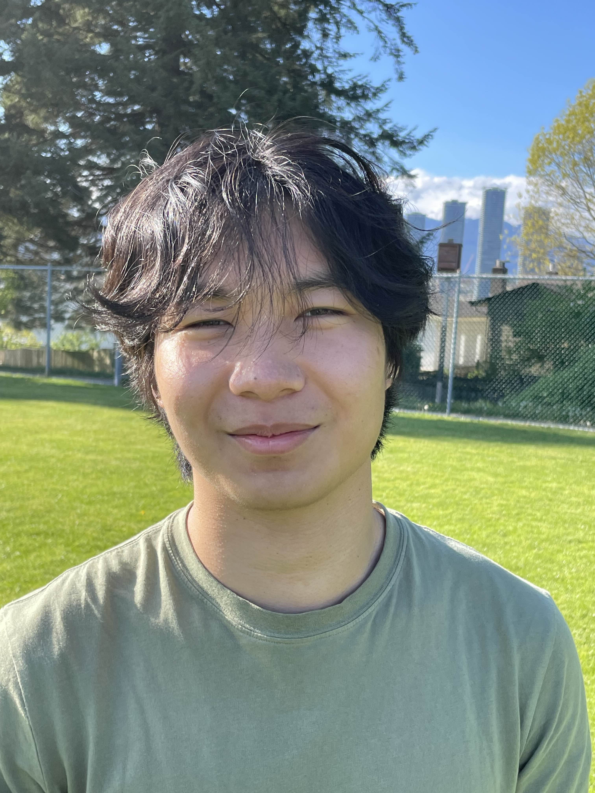

Welcome to my portfolio! I'm Daniel, a 3rd year electrical engineering student at the University of British Columbia.
Within my academic realm, you will find me nestled deep in some textbooks or web forums in order to solve a problem I am transfixed on.
I love problem-solving. But more than that, I love instilling creativity to my solutions and workarounds that complement my logical side.
I am interested in a wide variety of subjects such as signal processing, digital systems design, controls, analog electronics, electromagnetics and many more.
I also love studying higher-level maths and its applications toward electrical engineering.
Outside of school I enjoy bouldering, listening to classical works, and reading fantasy novels.